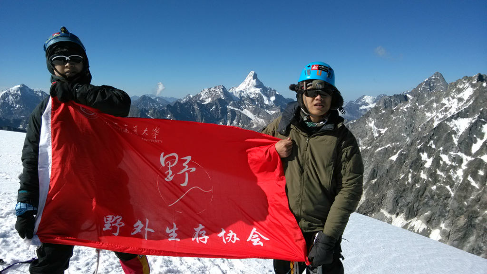
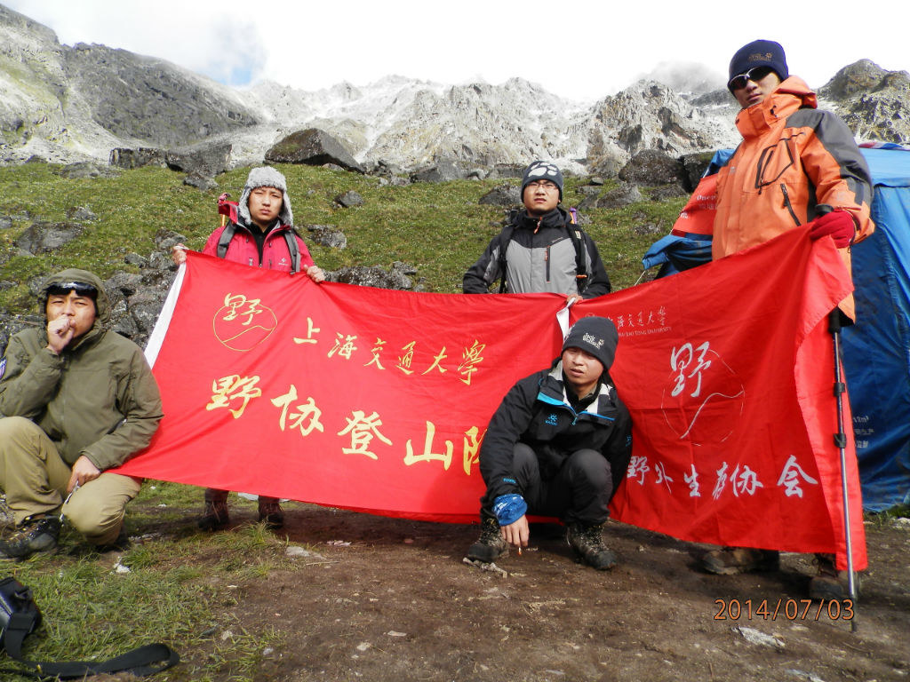
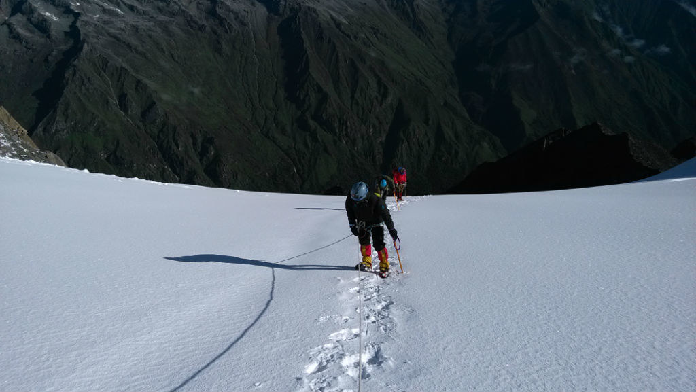

发信人: BeatboxST (ST), 信区: outdoor
标 题: 上海交通大学野外生存协会2014年登山队登顶半脊
发信站: 饮水思源 (2014年07月27日21:54:03 星期天)
上海交通大学野外生存协会登山队五名队员于六月三十日，由上海出发前往四川阿坝自治
州进行攀登。其中，两名队员在教练的带领下，于七月四日上午九点，成功登顶海拔5430
米的半脊峰。
 screen.width - 200){this.width = screen.width - 200}">
半脊峰，海拔5430米，于四川省阿坝藏族羌族自治州理县毕棚沟旅游风景区深处，距离四
川省会成都250余公里，平均坡度在45度左右。由于此峰顶隐于一个山脊之后，所以当地并
没有该峰的名称，依山顶的形状首登者给它起名为半脊峰。野协曾经于2007年5月攀登半脊
峰，但是在距离山顶一百米的高度由于种种原因并没有登顶成功；一转眼，两千六百多个
日子之后的野协登山队，终于能够实现前辈们的夙愿，成功登顶。
 screen.width - 200){this.width = screen.width - 200}">
七月三日，登山队员们进山，并于下午两点到达海拔4400米的C1营地，随后，三名队员出
现了发烧、呕吐等比较严重的高反现象，在一段时间的适应过后，并未出现较好的恢复效
果。于是，两名队员决定下撤，其他三名队员决定留守。
七月四日凌晨三点，状态较好的两名留守队员在两名教练的帮助下开始轻装冲顶，并与九
点冲顶成功。下午一点，冲顶组成员返回C1营地，在进行了短暂的休整后，全队平安下车
到本营并乘车返回理县。
时隔多年，野协重新组建了雪山登山队，队员由五名野协核心干事组成。这次攀登活动重
新燃起了野人们对雪山的向往，并为之后的攀登计划积累了宝贵的经验。行诸山野，立命
天地，我们将在每天走的更高、更远！
上海交通大学野外生存协会成立于2002年，协会的主题是登山、攀岩和徒步等户外运动，
曾荣获上海市优秀社团。成立至今，已经成功登顶四姑娘山二峰、半脊峰、雀儿山、岗什
卡等山峰。
 screen.width - 200){this.width = screen.width - 200}">
screen.width - 200){this.width = screen.width - 200}">
--
※ 来源:·饮水思源 bbs.sjtu.edu.cn·[FROM: 59.78.21.162]
|